<div class="instruments">
    <div class="oddemeter_container">
        
        <div class="oddometer">
            <div class="oddometer_numbers">
                <b>{{100}}<span class="text_especial">/350W</span></b>
                <b>{{100}}<span class="text_especial">W/Min</span></b>
            </div>
            <div class="oddometer_bar">
                <div class="bar" #progress></div>
            </div>
        </div>
    </div>
    <div class="circular_bars">
        <app-progress-circular [value]="value" image="../../../assets/progress/bi_battery-charging.svg"></app-progress-circular>
        <app-progress-circular [value]="value" image="../../../assets/progress/temperature-high.svg"></app-progress-circular>
        <app-progress-circular [value]="value" image="../../../assets/progress/bi_battery-charging.svg" style="visibility: hidden ;"></app-progress-circular>
        <app-progress-circular [value]="value" image="../../../assets/progress/bi_battery-charging.svg" style="visibility: hidden ;"></app-progress-circular>
    </div>
</div>
